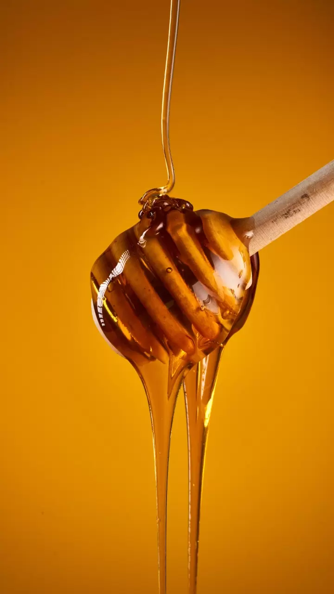

ABOUT US
Nurturing Nature, Crafting Excellence
Welcome to Hindh Organics, where our journey is a testament to our unwavering commitment to the purest gifts of nature. We are more than just a honey producer; we are guardians of tradition, stewards of the environment, and champions of a sustainable future.
Our Roots
Our story begins with a deep-rooted love for the natural world. Founded by a group of passionate individuals, Hindh Organics was born out of a desire to share the unparalleled wonders of pure, unadulterated honey with the world. Our roots in traditional beekeeping and sustainable practices have allowed us to create a brand that stands for quality, purity, and ethical stewardship.
At Hindh Organics, we are beekeepers at heart. We understand that the journey from hive to honey jar is a delicate, intricate process. Our experienced beekeepers tend to our hives with the utmost care, ensuring our bees are not only productive but also content. Happy, healthy bees are at the core of our commitment to producing the finest honey.
We recognize that our work is intricately connected to the well-being of the planet. Sustainability is not just a buzzword for us; it's a guiding principle. Our sustainable beekeeping practices prioritize the health of our pollinators and the ecosystems they support. From responsible hive management to eco-friendly packaging, we take every step to reduce our environmental footprint.
Our journey is a shared one, and we value the communities we work with. We collaborate closely with local farmers and beekeepers, empowering them to thrive alongside us. Together, we create opportunities for income generation, knowledge sharing, and the preservation of traditional beekeeping practices.
Quality is the hallmark of our brand. We spare no effort in ensuring that every jar of honey we produce meets the highest standards of purity and taste. Our rigorous quality assurance processes guarantee that you receive honey that is not just sweet but a true embodiment of nature's goodness.

WHAT WE DO
Quality, Purity, Sustainability: Our Promise to You.Pure Honey Production
We specialize in the production of pure, unadulterated honey that captures the authentic flavors and benefits of nature.
Sustainable Beekeeping
We practice sustainable beekeeping methods that prioritize the well-being of our honeybees and the ecosystems they inhabit.
Community Engagement
We collaborate closely with local communities, supporting farmers and beekeepers to create sustainable livelihoods and preserve traditional beekeeping knowledge.
Quality Assurance
Quality is at the core of our operations. We employ stringent quality assurance processes to guarantee that every jar of honey meets the highest standards, free from additives, contaminants, or compromise.
Educational Initiatives:
We are dedicated to raising awareness about the importance of bees in our ecosystem. Our educational programs aim to inspire others to appreciate and protect the vital role bees play in pollination and environmental sustainability.
Environmental Responsibility
We take proactive steps to minimize our environmental impact. From sustainable packaging choices to reducing waste, our commitment to environmental responsibility is an integral part of our work.